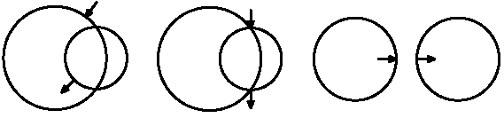

|
|||||||||||||||||
|
Server time: 2006-01-10 05:48:27 |
SPOJ Problem Set278. BicycleProblem code: BICYCLE
Peter likes to go to school by bicycle. But going by bicycle on sidewalks is forbidden and going along roads is dangerous. That's why Peter travels only along special bicycle lanes. Fortunately Peter's home and school are in the immediate proximity of such paths. In the city where Peter lives there are only two bycycle lanes. Both lanes have the form of a circle. At the points where they cross it is possible to move from one path to the other. Peter knows the point where he enters the road and the point at which it is necessary to leave to enter the school. Peter is interested in the question: "What is the minimal distance he needs to cover along the lanes to get to school?" Inputt – the number of test cases [t<=100],
then t test cases follow. You may assume that this points lie on the circle with high accuracy (10-8). Both points may lie on the same circle. OutputFor each test case output the minimum distance that Peter needs to go from home to get to school. The precision of the answer must be under 0.0001. If it's impossible to get to school using the bicycle lanes output -1. ExampleInput: 3 0 0 5 4 0 3 3.0 4.0 1.878679656440357 -2.121320343559643 0 0 5 4 0 3 4.0 3.0 4.0 -3.0 0 0 4 10 0 4 4.0 0.0 6.0 0.0 Output: 8.4875540166 6.4350110879 -1
|
||||||||||||||||
| |||||||||||||||||